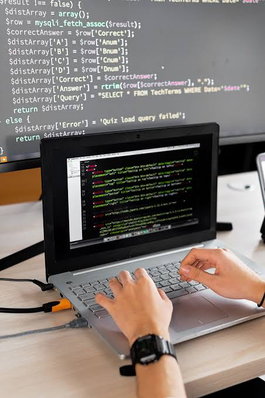
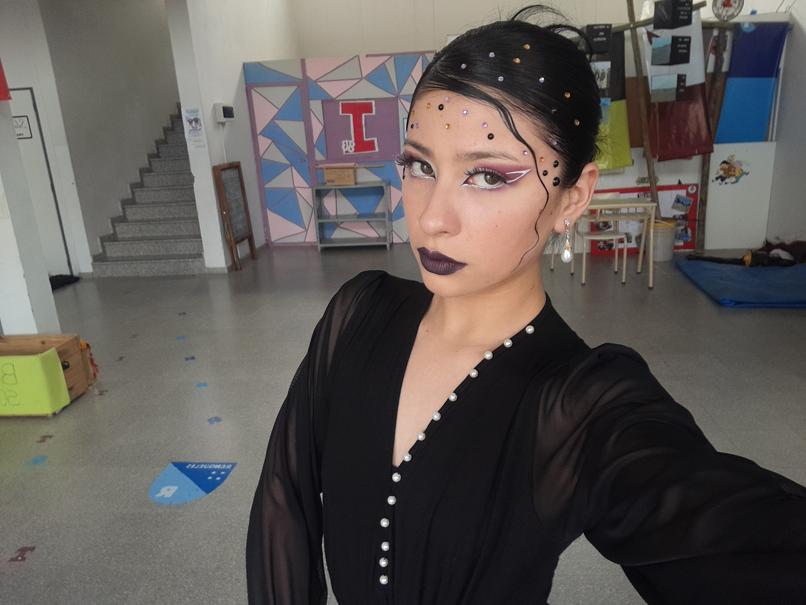

Lo que quiero estudiar
Escribí acá la carrera o tecnicatura que querés seguir después de terminar la secundaria y por qué te interesa.
Conoceme un poco más · 6°2
Un espacio personal para contar quién soy, lo que me apasiona y dos datos random sobre mis planes y gustos.
Hola, soy Zaira Rodas, estudiante de 6°2 de la Tecnicatura en Programación. Me gusta aprender y conocer cosas nuevas que tengan que ver con la programacion


Mi gran pasión es la danza y el folclore. Bailar es mi lugar para expresarme, conectar con nuestras raíces, compartir escenario y disfrutar de la música tradicional.
Cada ensayo y presentación me enseña constancia, ritmo y trabajo en equipo, algo que también llevo a todo lo que hago. la exigencia que lleva es algo que disfruto, ya que mas alla del tradiciona esta la estilizacion folclorica, que lleva mas alla el arte de nuestras raices.

Escribí acá la carrera o tecnicatura que querés seguir después de terminar la secundaria y por qué te interesa.
.jpeg)
Escribí acá cuál es tu juego favorito, de qué trata y qué es lo que más te gusta de jugarlo.